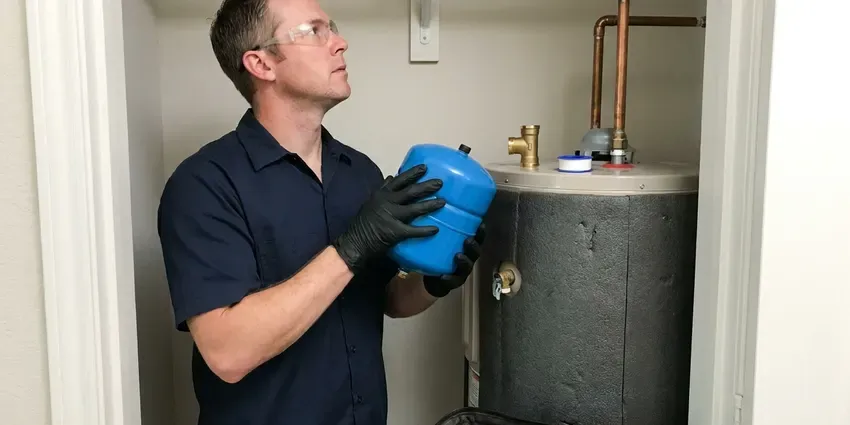

Sump Pump Installation in St. Cloud, MN
Water standing by the foundation after a big storm in St. Cloud, MN? We install pits, pumps and discharge lines that move it away.
- Check Valve Included
- Storm Season Scheduling
- Fast Local Scheduling
- Licensed and Insured
Dry Basement Start With the Right Pump in St. Cloud, MN
We measure the pit and the lift, then price the right pump for your St. Cloud home.
New Sump Pumps and Pits in St. Cloud, MN
CNV Plumbing installs sump pumps in St. Cloud, MN basements and crawl spaces. Spring snowmelt and heavy rain can raise groundwater fast in Minnesota, sending water into basements and overloading sump pumps. A pump that keeps up with that inflow keeps the slab dry. Most people call after the first wet carpet.
Work we handle every week:
- Primary and battery back-up pump installs
- Backup pumps, alarms and check valves
- Work that meets Minnesota plumbing code

Additional Plumbing Installation Services in St. Cloud, MN
We install water heaters, pumps, lines, and fixtures across St. Cloud, MN with careful, permitted work that passes inspection the first time.


Customers
Why Choose CNV Plumbing for Sump Pump Installation in St. Cloud, MN?
A pump that short cycles every forty seconds burns out early. Matching pump capacity to pit volume gives the motor a rest between cycles, which is how a 1/2 HP unit reaches ten years. The first big storm tells the truth.
- Ground Knowledge, Minnesota soil and water table levels change where we set the pit, and we account for both.
- Correct Sizing, Pump capacity is matched to pit size and lift.
- Backup Protection, Battery backup pumps and alarms run during outages.
Citywide Coverage
From hillside homes to low lots, we cover every part of St. Cloud. It helps to book ahead of storm season.
Experienced Team
Sump pumps, ejector pumps and drain lines come up every week for our crew. Experience shows them which corner of the basement usually takes on water first.
Safety-First Approach
Before we leave, we inspect the full install. We look at the cord, the lid, the check valve and the outside outlet.
Trusted Certified St. Cloud Plumbing Services Professionals
At CNV Plumbing, we take pride in licensed, certified plumbing services throughout St. Cloud, MN. Credentials matter in this trade. Our plumbers hold recognized industry credentials, and they follow strict safety and quality rules on every repair, installation and maintenance call we run.
Call Us Now PHCC Plumbing Contractor Recognition
PHCC Plumbing Contractor Recognition Better Business Bureau (BBB) Accreditation
Better Business Bureau (BBB) Accreditation Angi Certified Pro
Angi Certified Pro ISO 9001 Quality Management Certification
ISO 9001 Quality Management CertificationSump Pump Installs in St. Cloud, MN
Zoeller Sump Pump Installation in St. Cloud, MN
Zoeller has built cast iron sump pumps for decades, and parts are easy to get. The M53 and the M98 are the two we set most, depending on lift and inflow, and both come with mechanical float switches that hold up for years. They make matching backup units. We help you pick the model that fits the pit.

Crawl Space Sump Pump Installation in St. Cloud, MN
Crawl spaces with standing water breed mold and rot sill plates within a few seasons. We set a basin at the lowest point, run perforated drain pipe to it where needed and seal the vapor barrier around the lid so the space stays dry. Clearance is usually under two feet. We route the discharge out through the rim joist and away from the foundation.
Primary Sump Pump Installation in St. Cloud
A primary sump pump is the one doing the daily work, kicking on every time the float rises in the pit after rain or snowmelt. Sizing comes from two measurements we take on site, the pit diameter and the vertical lift to the discharge. Most homes need 1/3 or 1/2 HP. A 1-1/2 inch discharge line handles the flow from either size without straining the motor.
Exterior Drainage and Yard Sump Pumps in St. Cloud
Sunken patios, below-grade driveways and deep window wells collect water with nowhere to go. For those areas we set an exterior basin with a submersible pump and run the discharge to a safe point, often a pop-up emitter in the yard. Slopes toward the house are the usual cause. The outlet sits well clear of the foundation and the property line.
Battery Backup Sump Pump Systems in St. Cloud, MN
Backup systems we install use sealed AGM batteries that do not need water. A smart charger keeps the battery topped off and sounds an alarm if the battery weakens, the primary fails or the water rises past the backup float. Expect a battery swap every four to five years. Finished basements get the most out of them.
Pedestal Sump Pump Installation in St. Cloud, MN
Pedestal pumps put the motor on a column above the pit, so the motor never sits in water. You can reach the motor and the switch without fishing anything out of the pit, which helps in a basement where the pit is shallow or tight. Expect more motor noise than a submersible. We set the float rod and the discharge so the pump cycles cleanly.
New Sump Pit Installation in St. Cloud
No pit yet? We saw-cut the slab at the low corner, break out the concrete and dig down through soil, hardpan or rock to set an 18 by 22 inch basin. We backfill around the basin with washed gravel so groundwater has a path in. The slab gets patched with new concrete. The pump, lid and discharge go in last.

Submersible Sump Pump Installation in St. Cloud
Submersible pumps live at the bottom of the pit with a sealed, oil-cooled motor. Because the motor is cooled by the surrounding water, they run quieter and can push more gallons per minute up a tall lift than most pedestal pumps. Lids close flat over them. Each install gets a sealed lid and a grommet around the cord to keep out radon and odor.
Sump Pump Installation Near Me in St. Cloud, MN
Nearby St. Cloud homeowners call us for pump swaps, new pits and backup systems. Most swaps take one visit. Short drive, quick answer.
Need sump pump installation near me before the next storm? Our local plumbers can usually come out within a day. Most installs in existing pits are done the same day.
CNV Plumbing at a Glance
- Fully licensed plumbing team covering St. Cloud, MN
- 24/7 emergency service with same-day scheduling
- Upfront, flat-rate pricing before work begins
- 4.8-star rated by 501+ Minnesota customers
St. Cloud Map
St. Cloud Information
- Population
- 71,013
- Area codes
- 320/763/952
- Service area
- St. Cloud and communities within 40 miles
- Nearby
- Maple Grove, Coon Rapids, Plymouth, Brooklyn Park
Slow-draining ground keeps rain against the foundation for days, so a good pump with a clear discharge line matter for low lots in St. Cloud, MN.
Expert Services
Call CNV Plumbing for honest, reliable plumbing from people who know the trade in St. Cloud, MN.
Our Specialized Plumbing Services in St. Cloud, MN
At CNV Plumbing, we handle the full list of plumbing services across St. Cloud, MN. We go from leak detection all the way to full system installations, for homes and commercial buildings, and we do it quickly at a fair price. Explore our core services below:


What to Expect on a Sump Pump Install in St. Cloud, MN
Here is how a sump pump install goes at your St. Cloud home, from measuring to testing.
Tell Us Where the Water Is
Call (612) 712-9569 and describe where water collects. We inspect it and recommend a pump and pit.
Prepare the Pit
We clean the existing basin or saw the slab for a new one, then set it in clean stone.
Install and Test
We set the pump, the check valve and the discharge. Then we fill the pit and show you how it works.
Frequently Asked Questions About Sump Pump Installation in St. Cloud
A pump swap in an existing pit typically costs $600 to $1,500. A new pit with slab cutting and digging often runs $1,500 to $4,000, depending on how deep we go and what we hit. Battery backups add $500 to $1,500.
Most last seven to ten years. Idle pumps fail sooner, so pour a bucket in the pit every few months.
A submersible sits in the pit under water, so it runs quieter and takes no floor space. A pedestal pump keeps the motor on a column above the pit. Either can do the job. We help you pick based on your basement.
Discharge should end at least ten feet from the foundation, on ground that slopes away. Most cities do not allow sump water in the sanitary sewer.
Most standard installs take three to six hours. A new pit can stretch it to a full day. Swaps go faster.
A straight replacement often needs no permit. New pits, electrical work or new discharge connections may need one, and we will tell you.
Plenty of cities require a plumbing permit for new sump pump installs or major replacements. CNV Plumbing takes care of permitting in St. Cloud, MN so the work passes inspection.
Doing it yourself is possible but risky. Getting the pit depth, the check valve orientation, the discharge route and the outlet wiring right takes experience, and one mistake shows up during the next storm. We do it daily.
What Our Customers Say About Our Plumbing Experts

Robert G.
The camera showed a full break in our clay sewer line near the street. CNV Plumbing replaced it with a trenchless pipe burst, so the only digging was two small pits in the yard. They let us watch the footage before and after.
Sewer Line Replacement · St. Cloud, MN
Jessica T.
We were adding a gas range in a kitchen remodel and needed a new line run from the meter. The plumber pulled the permit, ran the pipe through the crawl space, and had it inspected and approved within the week.
Gas Line Repair · Maple Grove, MNLaura S.
Our 40 gallon tank started leaking from the bottom after thirteen years. The tech hauled the old one out, set a new unit with a fresh expansion tank, and had hot water running in about four hours. He took the old tank with him too.
Water Heater Replacement · Coon Rapids, MN
Angela D.
Our sump pump quit during a storm and the water was an inch from the basement carpet. CNV Plumbing put in a new pump with a battery backup that same evening. We have had two heavy rains since. It kicked on both times.
Sump Pump · Plymouth, MNJames P.
Our restaurant had a slow leak at the hand sink that was rotting the cabinet base. CNV Plumbing came in at six in the morning before prep, replaced the trap and both supply lines, and was packed up before my first cook clocked in.
Commercial Plumbing · St. Cloud, MNPatricia H.
We had a slab leak that two other companies could not find. CNV Plumbing located it in under an hour with a listening device. They rerouted the line through the attic instead of breaking up the floor, so we kept our kitchen tile.
Slab Leak Repair · Blaine, MN